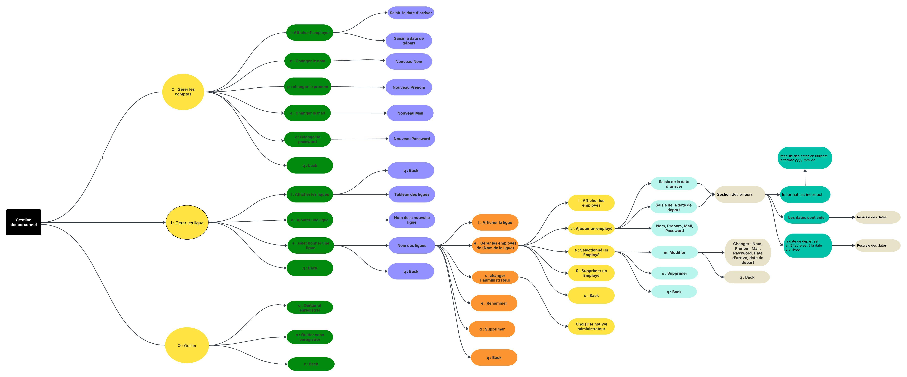
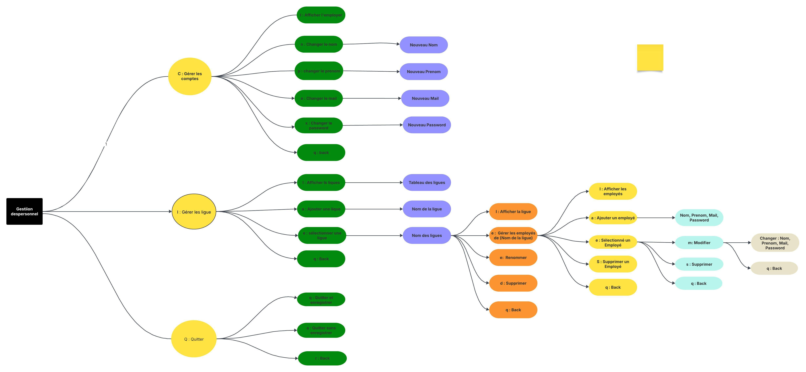
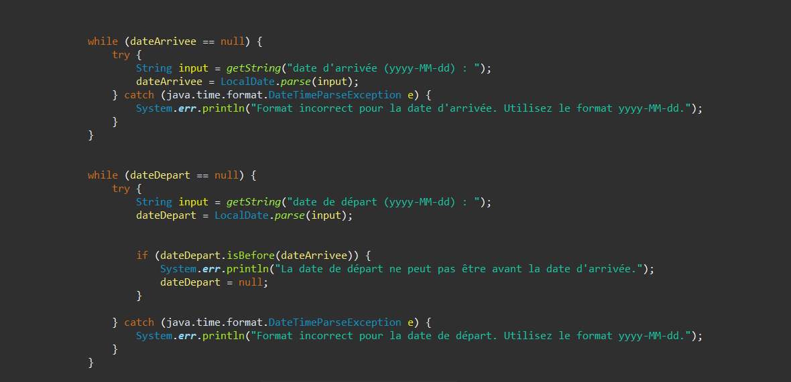
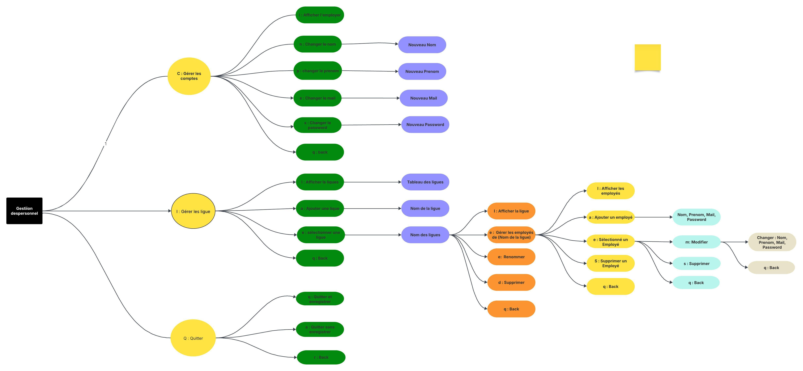
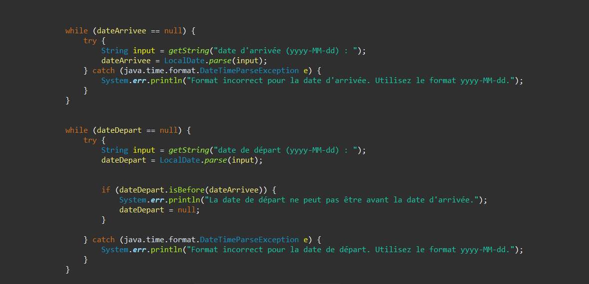
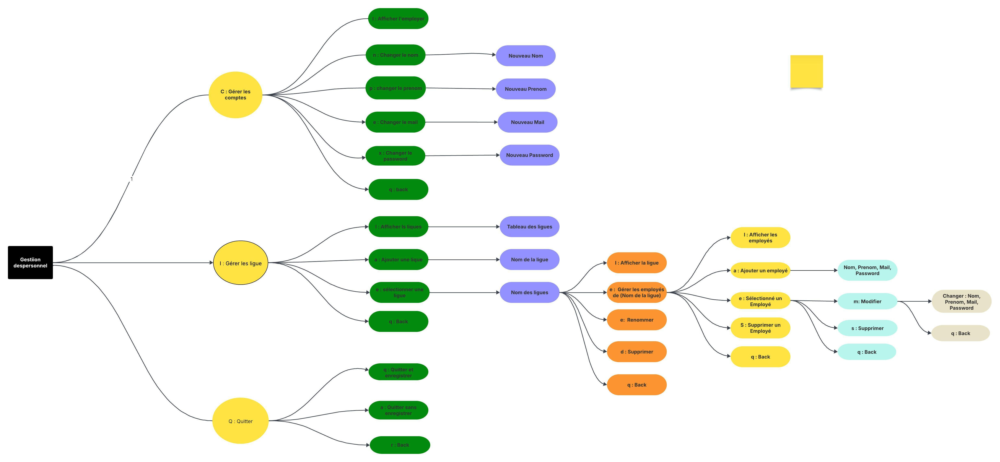
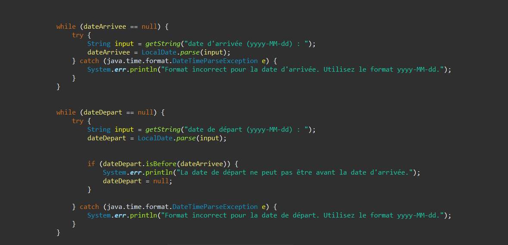
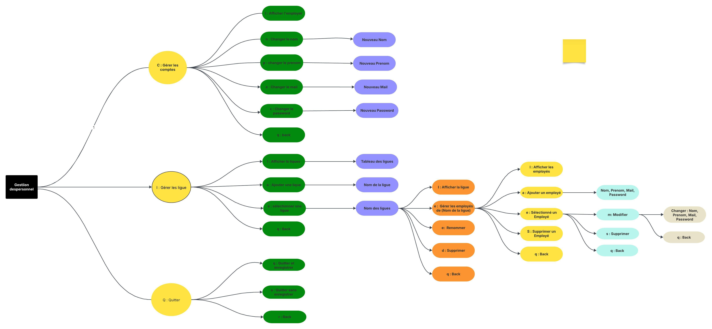
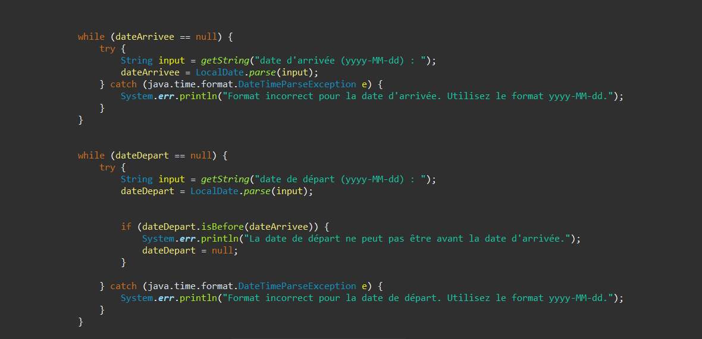

GALERIE

 





Ce projet a été réalisé dans le cadre de ma formation BTS SIO, avec pour objectif de concevoir une application Java orientée objet permettant de gérer les employés d’une ou plusieurs ligues sportives. L’application fonctionne en mode console, mais repose sur une architecture solide et professionnelle, proche de ce que l’on retrouve dans des applications métiers réelles.
L’un des objectifs principaux du projet est de modéliser une relation claire entre les employés et les ligues auxquelles ils appartiennent.
Le projet intègre volontairement des règles métier fortes, directement dans les classes Java, afin d’éviter toute incohérence fonctionnelle.
La cohérence des données est assurée à plusieurs niveaux du projet. Par exemple, les dates d’embauche et de fin de contrat sont vérifiées pour éviter les incohérences.
L’application étant en mode console, une attention particulière a été portée à la sécurisation des entrées utilisateur.
📁 Organisation orientée objet :
Chaque employé possède :
| Choix | Justification |
|---|---|
| LocalDate | Fiabilité et simplicité dans la gestion des dates |
| Exceptions | Sécurité et robustesse de l’application |
| Objet & encapsulation | Code maintenable et évolutif |
| Console | Focus sur la logique métier |
| Règles métier strictes | Données cohérentes et fiables |
Maîtrise des principes fondamentaux de la programmation orientée objet : encapsulation, héritage, polymorphisme et responsabilité des classes.
Traduction des besoins fonctionnels en règles métier strictes garantissant la cohérence et la fiabilité de l’application.
Mise en place d’exceptions personnalisées et de contrôles pour sécuriser les actions utilisateur et éviter les incohérences.
Structuration claire du code avec séparation des responsabilités pour un projet maintenable et évolutif.
Vérification systématique des entrées utilisateurs afin de garantir l’intégrité et la cohérence des données.
Structuration d’un projet professionnel avec logique, rigueur et respect des bonnes pratiques de développement.


Ce projet m’a permis de mettre en pratique des concepts fondamentaux du développement logiciel, tout en respectant des contraintes réalistes de gestion du personnel.
Il constitue une base solide pour une future évolution vers :